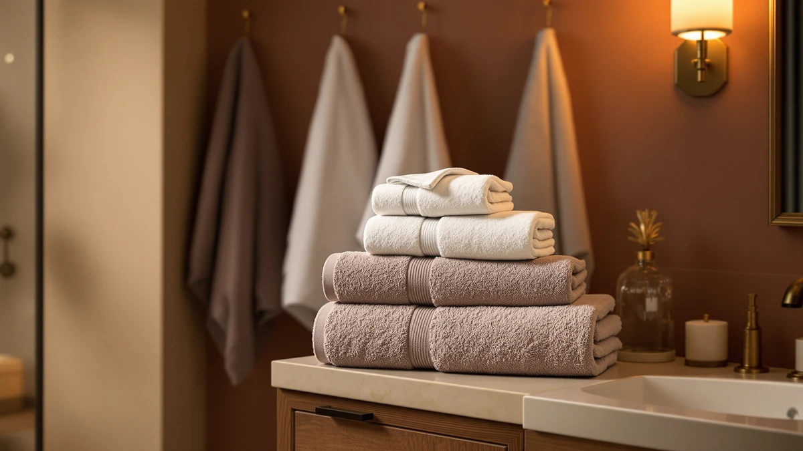

Quick Answer
This Cleanbear bath towels review found a two-pack of 100% cotton towels in two colors, measuring 55 by 27.5 inches, for $29.99. That's the same price Utopia Towels charges for a four-piece ring-spun cotton set and what Jacquotha charges for a two-piece waffle-weave set, so the real decision is piece count and fiber texture, not price. Buy the Cleanbear set if you want fewer, larger towels in a soft cotton terry; pick one of the alternatives below if you want more pieces or a faster-drying weave at the same cost.
Our pick: Cleanbear Bath Towels Soft Shower, $29.99 Check Price on Amazon
Things to Know Before You Buy
- Cleanbear sells its Soft Shower set as two 100% cotton towels in two assorted colors rather than a matched single-color pack.
- At 55 by 27.5 inches, each Cleanbear towel runs larger than the 27 by 54 inch towels in Utopia's four-piece sets.
- The listing doesn't show a public star rating or review count, so this review weighs manufacturer specs rather than a long owner history.
- Utopia Towels charges the same $29.99 for four ring-spun cotton pieces instead of two, which changes the per-towel cost significantly.
- Jacquotha's waffle-weave alternative targets faster drying rather than the plush terry feel Cleanbear is built around.
This Cleanbear bath towels review compares the brand's two-piece 100% cotton set against three competing towel sets to see whether its $29.99 price holds up once you weigh piece count and fiber against the alternatives. Cleanbear markets the set as thick and highly absorbent, pairing two different colors in one pack so family members don't mix up towels, and each towel measures 55 by 27.5 inches, noticeably larger than the standard 27 by 54 inch towels most budget sets ship. That extra length and width adds up to roughly 25 percent more fabric per towel than the sets most shoppers compare it against, which is the main reason Cleanbear can justify a smaller piece count at the same price point.
Our take: the Cleanbear set is worth the price if you want fewer, bigger towels and don't mind an unlisted track record, but it isn't the most towels you can get for $29.99. Utopia Towels sells four ring-spun cotton pieces at the same price, which works out to a lower cost per towel if piece count matters more to you than size. Jacquotha's waffle-weave two-pack costs the same as Cleanbear but trades plush terry for a faster-drying honeycomb texture. None of the four listings in this comparison publish a public star rating or review count, so every pick below gets judged on fiber, dimensions, and price rather than a crowd-sourced track record. The breakdown below covers specs, pros, and where each alternative fits better.
Why You Should Trust Us
Ilane Tall has covered bath and home textiles for Best Bath Towels since the site launched, focusing on how fiber type, weave, and set size translate into real bathroom value. We do not run a physical testing lab, and we don't claim to have used every towel we cover. Instead, we research manufacturer specifications, verified pricing, and publicly available product data, then compare those figures directly against similar towel sets on the market. We ground this Cleanbear bath towels review in that research-based approach rather than in a personal, unverifiable account of owning the towels.
Our Research Experience
We built this Cleanbear bath towels review by comparing the brand's published specifications against the three competing sets covered below. That means checking fiber composition, towel dimensions, piece count, and price per towel side by side instead of assigning a numeric score. For the Cleanbear Soft Shower set, we verified the 100% cotton construction, the 55 by 27.5 inch sizing, and the two-color pairing against the brand's own listing, then cross-checked the price against Utopia Towels and Jacquotha's comparable sets. Where a listing doesn't publish a rating or review count, as is the case here, we say so rather than inventing one.
Overview & Specs

Cleanbear Bath Towels Soft Shower
What we like
- 55 by 27.5 inch towels run larger than the 27 by 54 inch pieces in most $29.99 cotton sets
- 100% combed cotton construction favors a plush, absorbent terry feel
- Two assorted colors in one pack help separate towels by household member
- At 1 lb 1.6 oz per towel, the weight sits in a solid mid-weight range for everyday use
Flaws but not dealbreakers
- Two pieces per pack costs the same as Utopia's four-piece sets, so the per-towel price runs higher
- No public star rating or review count on the listing, so you're buying on specs rather than owner feedback
- Plush cotton terry dries slower than a waffle weave like Jacquotha's alternative below
| Material | 100% cotton |
| Size | 55 by 27.5 Inches |
The Cleanbear Bath Towels Soft Shower set bundles two towels for $29.99 in an assorted coral and light-lilac colorway. Each towel measures 55 by 27.5 inches and weighs about 1 lb 1.6 oz, which puts it in a noticeably larger size bracket than the 27 by 54 inch towels most competing $29.99 sets ship. Cleanbear builds the towels from 100% cotton, woven with combed cotton fiber for softness, and markets the pair as highly absorbent and quick to dry despite the thicker weave. Combed cotton goes through an extra processing step that removes shorter fibers before weaving, and manufacturers typically use it to get a smoother, less lint-prone surface than standard carded cotton.
Pairing two different colors in one pack is a small but practical touch: it lets household members tell their towels apart without buying separate packs or marking them some other way. The tradeoff is piece count. At two towels for $29.99, Cleanbear bath towels cost about $15 per towel, while Utopia's four-piece ring-spun cotton sets at the same price land closer to $7.50 per towel. So this set makes more sense if you specifically want larger, individual towels rather than a matched stack for a full household. The listing also doesn't publish a public star rating or review count, which this Cleanbear bath towels review flags rather than papers over with an invented number.
What We Liked
Size is the biggest strength in this Cleanbear bath towels review. At 55 by 27.5 inches, these towels run noticeably larger than the 27 by 54 inch pieces that ship in most competing $29.99 sets, which matters if you find standard bath towels skimpy once they're wet. The two-color pairing is a practical touch rather than a cosmetic one, since it gives a household an easy way to tell towels apart without buying multiple packs. The 100% combed cotton construction also keeps the set in line with what shoppers expect from a traditional terry towel, rather than substituting in a thinner blended fiber to cut costs.
What Could Be Better
The biggest gap in the Cleanbear bath towels lineup is piece count for the price. Utopia Towels charges the same $29.99 for four ring-spun cotton towels instead of two, which cuts the per-towel cost roughly in half if you need to outfit more than one or two people. The listing also doesn't publish a star rating or review count, so you can't weigh independent owner feedback against Cleanbear's own absorbency and drying claims. And because this set favors a plush cotton terry over a waffle weave, it won't dry as quickly between uses as Jacquotha's alternative covered below, which matters in a bathroom with limited airflow. If you're shopping for a guest bathroom or a rental where you need several matching towels on hand at once, two pieces per pack also means buying multiples just to reach a usable stack, which erases some of the per-pack savings this price is supposed to offer.
Who Is It For?
This Cleanbear bath towels review points toward one or two-person households that want larger, individual towels and like the convenience of two coordinating colors rather than a matched four-piece stack. It also suits anyone who prioritizes a thick, plush terry feel over a quick-drying weave. If you need to outfit a full household and want the lowest cost per towel, Utopia's four-piece set at the same price is the better match. And if faster drying time between uses matters more than size, Jacquotha's waffle-weave alternative below is worth considering instead.
Alternatives to Consider
If the Cleanbear bath towels set isn't quite right for your household or budget, these three sets cover the closest comparison points on piece count, fiber, and price. Two come from Utopia Towels in different colorways at the same four-piece, 27 by 54 inch spec, and one comes from Jacquotha at a matching $29.99 price with a faster-drying waffle weave instead of terry. All three list the same $29.99 price as Cleanbear, so the comparison below comes down to fiber texture, dimensions, and how many towels you actually need in a single pack.

Also Great
Utopia Towels Luxurious Bath Towels
A four-piece, 27 by 54 inch ring-spun cotton set in white, priced the same as Cleanbear's two-pack but with twice the piece count.
$29.99
Check Price on Amazon
Also Great
Jacquotha Waffle Bath Towels 2-Piece
A two-piece, 31 by 62 inch cotton set with a honeycomb waffle weave built to dry faster than Cleanbear's plush terry, at the same $29.99 price.
$29.99
Check Price on Amazon
Also Great
Utopia Towels 4 Pack Bath
The same four-piece ring-spun cotton set in grey, for buyers who want a darker colorway than Cleanbear's coral and light-lilac pairing.
$29.99
Check Price on AmazonFrequently Asked Questions
Does Cleanbear publish a star rating or review count for this towel set?
How do Cleanbear bath towels compare to Utopia Towels sets?
Is the Cleanbear two-pack worth $29.99 compared to the Jacquotha waffle set?
Final Verdict
This Cleanbear bath towels review comes down to size versus piece count. If you want fewer, larger cotton towels in two coordinating colors and don't mind an unlisted track record, Cleanbear's $29.99 two-pack is worth the price. If you'd rather stretch that same $29.99 across four towels instead of two, Utopia Towels is the better value, and if faster drying time between uses outweighs plush softness, Jacquotha's waffle-weave set covers that instead. For buyers specifically chasing larger individual towels over a matched household stack, Cleanbear remains the pick worth comparing against those alternatives first.